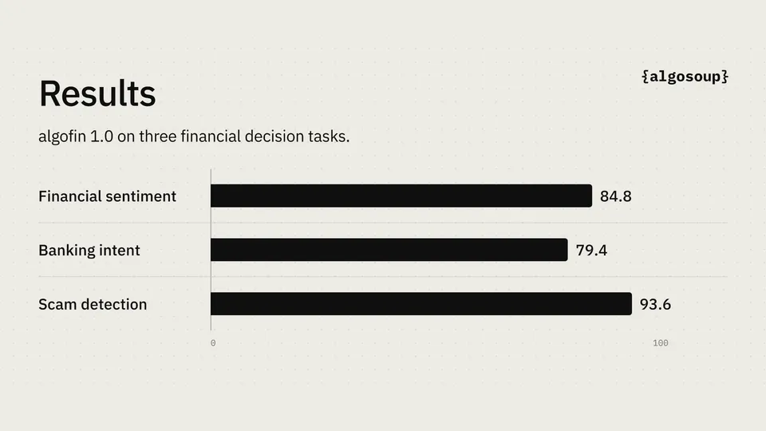

Algosoup launches algofin 1.0: a finance decision model banks can run air-gapped on one GPU
- Who: Algosoup, a London-based forward-deployed engineering company (co-founder and CEO Alex Reid; founding partner Henry Qin).
- What: algofin 1.0, an AI model trained for financial decisions, licensed for financial firms to run on their own infrastructure.
- When: announced October 16, 2026, via press release.
- Benchmarks: beats leading classifier models by 11 points on financial sentiment; matches them on banking intent and scam detection. Published scores: 84.8 (sentiment), 79.4 (banking intent), 93.6 (scam detection).
- Evaluation: scored with the benchmark team’s published evaluation code, unmodified; all three tasks zero-shot.
- Deployment: self-hosted, air-gapped capable, on a single GPU; firms choose when to introduce model updates.
Algosoup, a London-based engineering firm, announced today the launch of algofin 1.0, an AI model trained to make financial decisions — and licensed to banks and financial firms to run inside their own networks, even air-gapped, on a single GPU.
One pass, one answer
algofin reads a question once — a customer message, a news story, a report — and returns a probability for each possible answer. No chat, no chain-of-thought, no API round-trip: a decision model built for the places where financial calls actually get made.
The numbers
On published benchmarks, algofin 1.0 beats leading classifier models by 11 points on financial sentiment and matches them on banking intent and scam detection. The published scores: 84.8 on financial sentiment, 79.4 on banking intent, and 93.6 on scam detection.
On methodology, Algosoup says it scored the model with the benchmark team’s own published evaluation code, unmodified — after first reproducing the published numbers for the base model. All three tasks were run zero-shot: the model never saw the benchmark’s data in training.

Own the model, decide where it runs
The pitch is deployment, not just accuracy. algofin 1.0 runs self-hosted — inside the firm’s own network, including air-gapped environments — and fits on a single GPU, with firms choosing when model updates land. For regulated finance, that is the whole argument: the model that prices risk or flags scams runs on hardware the bank controls, so client data never has to leave the building.
“Finance firms should be able to own the model that makes their decisions, and decide where it runs,” said Alex Reid, Algosoup’s co-founder and CEO. Founding partner Henry Qin made the complementary point: public benchmarks get you in the room, but what matters is how the model handles a firm’s own messages, filings and edge cases — testable in-house precisely because the model runs there.
Who’s Algosoup
Algosoup is a London-based forward-deployed engineering company: its engineers embed with client teams to design, build, deploy and operate software across AI, machine learning, computer vision and data. It works with organisations across the UK and Europe, including financial services. algofin 1.0 is available for licensing now; firms can contact Algosoup to discuss evaluation and deployment requirements. The launch was also covered in syndicated press the same day.
Frequently asked questions
What is algofin 1.0?
An AI model trained to make financial decisions. It reads a question once — a customer message, a news story, a report — and returns a probability for each possible answer. Algosoup licenses it to financial firms to run on their own infrastructure.
How accurate is it?
On published benchmarks, algofin 1.0 beats leading classifier models by 11 points on financial sentiment and matches them on banking intent and scam detection. The published scores are 84.8 (financial sentiment), 79.4 (banking intent) and 93.6 (scam detection) — all scored zero-shot with the benchmark team’s own unmodified evaluation code.
Can a bank run it on its own systems?
Yes. algofin 1.0 supports self-hosted and air-gapped deployment on a single GPU, and firms choose when to introduce model updates — so client data never has to leave the building.